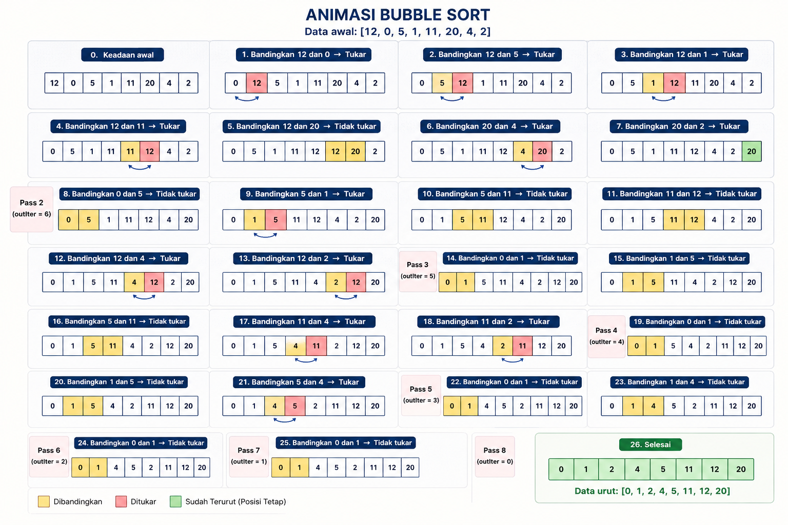

Bubble Sort
Bubble Sort adalah algoritma pengurutan data yang paling sederhana, meskipun membutuhkan waktu proses yang paling lama dibandingkan algoritma lainnya. Algoritma ini disebut "bubble" (gelembung) karena dalam setiap iterasi, data terbesar akan "mengapung" ke posisi paling kanan seperti gelembung. Tujuan Pengurutan: Mengolah data mentah agar dapat dianalisis dan digunakan untuk pengambilan keputusan (contoh: menentukan penerima beasiswa berdasarkan urutan nilai). Prinsip Kerja: Membandingkan dua data yang bersebelahan secara terus-menerus dan menukarnya jika urutannya salah. Proses Ascending: Dalam pengurutan dari kecil ke besar, jika data di sebelah kiri lebih besar dari data di sebelah kanan, maka posisi keduanya ditukar. Hasil Setiap Iterasi: Setelah satu putaran (iterasi) selesai, data terbesar akan menempati posisi paling kanan (indeks terakhir). Pengulangan: Langkah perbandingan diulangi untuk sisa data yang belum terurut hingga semua data berada di posisi yang tepat.Ilustrasi VisualBerdasarkan dokumen, proses pengurutan diilustrasikan menggunakan beban (karung/pot) dengan berat yang berbeda: Iterasi Pertama: Memindahkan angka terbesar (10) ke posisi paling kanan. Iterasi Kedua: Memindahkan angka terbesar kedua (7) ke posisi sebelum angka 10. Iterasi Ketiga: Memindahkan angka terbesar ketiga (5) ke posisi sebelum angka 7. Hasil Akhir: Data menjadi terurut sepenuhnya: 1, 2.5, 5, 7, 10
Ilustrasi

Implementasi Python
def bubbleSort(listData):
print('Data yang akan diurutkan', listData)
count = 0
# Loop untuk mengontrol jumlah iterasi
for outIter in range(len(listData)-1, -1, -1):
print('outIter=', outIter)
count = count + 1
print('Iterasi ke-', count, ':')
# Loop untuk membandingkan pasangan data bersebelahan
for i in range(outIter):
if listData[i] > listData[i+1]:
# Proses penukaran data (swap)
temp = listData[i]
listData[i] = listData[i+1]
listData[i+1] = temp
print(outIter, '=', listData)
print('Data urut-', listData)
# Contoh penggunaan
a = [12, 0, 5, 1, 11, 20, 4, 2]
bubbleSort(a)
Penjelasan :
metode pengurutan data dengan cara membandingkan dua angka yang bersebelahan lalu menukarnya jika urutannya salah. Data awal yang digunakan adalah [12, 0, 5, 1, 11, 20, 4, 2]. Proses dimulai dari kiri ke kanan dengan membandingkan angka pertama dan kedua, yaitu 12 dan 0. Karena 12 lebih besar dari 0, maka keduanya ditukar sehingga posisi angka yang lebih kecil berada di depan. Langkah berikutnya dilakukan dengan membandingkan 12 dan 5. Karena 12 masih lebih besar, maka ditukar lagi. Hal yang sama terus dilakukan pada pasangan angka berikutnya, sehingga angka yang paling besar akan bergerak perlahan ke bagian paling kanan. Inilah alasan metode ini dinamakan Bubble Sort, karena angka terbesar seolah-olah “mengapung” ke atas atau ke ujung kanan. Setelah putaran pertama selesai, angka terbesar sudah berada di posisi terakhir. Kemudian proses diulangi lagi dari awal, tetapi tidak perlu memeriksa bagian akhir yang sudah urut. Setiap putaran akan menempatkan satu angka besar pada posisi yang benar. Proses ini terus berlangsung sampai semua angka tersusun dari kecil ke besar. Pada gambar juga terdapat warna yang membantu memahami prosesnya. Warna kuning menunjukkan angka yang sedang dibandingkan, warna merah menunjukkan angka yang ditukar, dan warna hijau menunjukkan angka yang sudah berada pada posisi tetap atau sudah urut. Hasil akhir dari proses Bubble Sort pada data tersebut adalah [0, 1, 2, 4, 5, 11, 12, 20]. Jadi, gambar tersebut menjelaskan bagaimana Bubble Sort bekerja secara bertahap hingga semua data berhasil diurutkan.